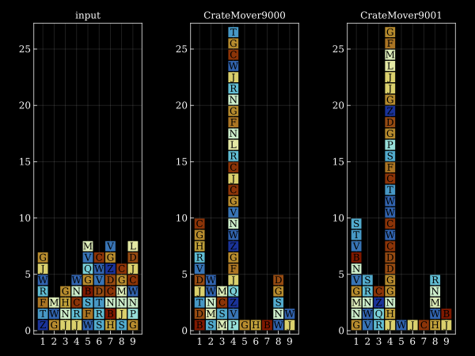

Day 05: Supply Stacks
We need to move crates from a start configuration. I store the data (stack and instructions) in a struct.
⪡supply-stacks⪢≣
const Crates = Vector{Vector{Char}}
struct Move
amount::Int
from::Int
to::Int
end
mutable struct State
crates::Crates
instructions::Vector{Move}
endThe CrateMover-9000 uses a one-by-one stack operation to move crates.
⪡crate-mover⪢≣
crate_mover_9000(crates::Crates) = function (m::Move)
for _ in 1:m.amount
x = pop!(crates[m.from])
push!(crates[m.to], x)
end
endHere I've hand-curried the crate_mover_9000 function, to make it easier to work with the foreach function:
⪡crate-mover⪢⊞
function run(crane::Function, st::State)
foreach(crane(st.crates), st.instructions)
st
endFor the CrateMover-9001 we can use array slicing to do what we want.
⪡crate-mover⪢⊞
crate_mover_9001(crates::Crates) = function (m::Move)
x = crates[m.from][end-m.amount+1:end]
crates[m.from] = crates[m.from][1:end-m.amount]
append!(crates[m.to], x)
end
file:src/day05.jl
module Day05
<<supply-stacks>>
<<crate-mover>>
<<day05-read-input>>
function main(io::IO)
input = read_input(io)
part1 = run(crate_mover_9000, deepcopy(input))
println("Part 1: $(last.(part1.crates) |> String)")
part2 = run(crate_mover_9001, deepcopy(input))
println("Part 2: $(last.(part2.crates) |> String)")
end
end # module@day 5Part 1: CWMTGHBDW
Part 2: SSCGWJCRBReading input
⪡day05-read-input⪢≣
function Base.parse(::Type{Move}, line)
r = r"move (\d+) from (\d+) to (\d+)"
m = match(r, line)
if m === nothing
error("Parse error, not a Move: $line")
end
Move(parse.(Int, m)...)
end
function read_input(io::IO)
lines = collect(readlines(io))
crates = [[] for _ in 1:9]
for i in 1:8
for j in 1:9
c = lines[i][(j-1)*4+2]
if c != ' '
pushfirst!(crates[j], c)
end
end
end
instructions = lines[11:end] .|> l->parse(Move, l)
State(crates, instructions)
endPlotting code
file:src/day05-figure.jl
module Day05Figure
export plot
using Makie
using Makie.GeometryBasics
include("day05.jl")
using .Day05: Crates
unzip(lst) = (getindex.(lst,1), getindex.(lst,2))
crates_to_rects(crates::Crates) =
unzip([(Rect(i-0.45, j-0.95, 0.9, 0.9), k - 'A')
for i in 1:9
for (j, k) in enumerate(crates[i])])
plot(crates::Crates; fig=nothing, ax=nothing) = begin
if ax === nothing
fig = Figure()
ax = Axis(fig[1,1]; aspect=DataAspect(),
xticksmirrored = true, yticksmirrored = true,
xticks=1:9, yticks=0:5:25)
end
crates |> crates_to_rects |>
r -> poly!(ax, r[1], color = r[2], colormap = :roma)
for i in 1:9
for (j, k) in enumerate(crates[i])
text!(ax, i, j-0.5, text="$k", align=(:center,:center), color=:black)
end
end
fig
end
end # module